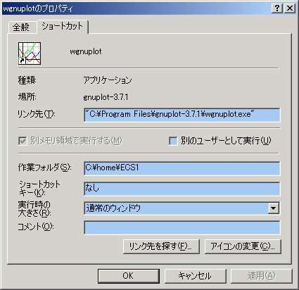

起動時にGNUPLOTがデータファイルを参照できるディレクトリはショートカットの｢作業フォルダ」に設定した場所である。
次の例では C:\home\ECS1 となる。

カレントディレクトリ(=パス指定無しでファイルを参照出来るフォルダ)を確認するには pwd とする。
この例ではC:\home\ECS1と表示され、起動時は確かに｢作業フォルダ」欄の指定通りである。
この状態で、例えばC:\home\ECS1\1st内にあるデータファイルLorenz.txtのグラフを描こうとしても
次のようにパスを指定しなければファイルを読むことはできない。

この例では1回目のパス指定のないsplotはエラーとなり、2回目のsplotで正しく描画される。
注意：ディレクトリ名の区切りには、円マーク \ ではなくスラッシュ / を用いること。
次の例のように、パス指定には絶対パス(=ドライブ名から始めて全て記述する)も
相対パス(=カレントディレクトリから見た相対位置を記述する)も利用できる。

C:\home\ECS1内にあるサブディレクトリ(フォルダ)1stにカレントディレクトリを移動させるには cd コマンドを使う。
cd "1st"
cd "C:/home/ECS1/1st"
相対パス指定(上)・絶対パス指定(下)のどちらでもよい。一つ上のディレクトリへは相対パス記法である ".." を使う。
注意：ダブルクォーテションでパス名を括ること。
次の例は絶対パス指定でカレントディレクトリを移動して、pwd コマンドで移動を確認したところ。